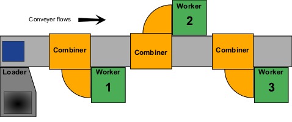
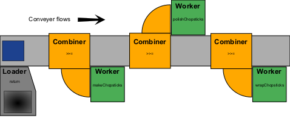

You may recognize the
You may recognize the Tray monad as a disguised version of the
Maybe monad that is a standard part of Haskell 98 library.
| Prev: Standard monad transformers | TOC: Contents | Next: Appendix II - Haskell code examples |
Because monads are such abstract entities, it is sometimes useful to think about a physical system that is analogous to a monad instead of thinking about monads directly. In this way, we can use our physical intuition and experiences to gain insights that we can relate back to the abstract world of computational monads.
The particular physical analogy developed here is that of a mechanized assembly line. It is not a perfect fit for monads — especially with some of the higher-order aspects of monadic computation — but I believe it could be helpful to gain the initial understanding of how a monad works.
Begin by thinking about a Haskell program as a conveyor belt. Input goes on end of the conveyor belt and is carried to a succession of work areas. At each work area, some operation is performed on the item on the conveyor belt and the result is carried by the conveyor belt to the next work area. Finally, the conveyor belt carries the final product to the end of the assembly line to be output.
In this assembly line model, our physical monad is a system of machines that controls how successive work areas on the assembly line combine their functionality to create the overall product.
Our monad consists of three parts:
We use the monad by setting up our assembly line as a loader machine which puts materials into trays at the beginning of the assembly line. The conveyor belt then carries these trays to each work area, where a combiner machine takes the tray and may decide based on its contents whether to run them through a worker machine, as shown in Figure A-1.
|  |
| Figure A-1. An assembly line using a monad architecture. |
The important thing to notice about the monadic assembly line is that it separates out the work of combining the output of the worker machines from the actual work done by the worker machines. Once they are separated, we can vary them independently. So the same combiner machines could be used on an assembly line to make airplanes and an assembly line to make chopsticks. Likewise, the same worker machines could be used with different combiners to alter the way the final product is produced.
Lets take the example of an assembly line to make chopsticks, and see how it is handled in our physical analogy and how me might represent it as a program in Haskell. We will have three worker machines. The first takes small pieces of wood as input and outputs a tray containing a pair of roughly shaped chopsticks. The second takes a pair of roughly shaped chopsticks and outputs a tray containing a pair of smooth, polished chopsticks with the name of the restaurant printed on them. The third takes a pair of polished chopsticks and outputs a tray containing a finished pair of chopsticks in a printed paper wrapper. We could represent this in Haskell as:
-- the basic types we are dealing with type Wood = ... type Chopsticks = ... data Wrapper x = Wrapper x -- NOTE: the Tray type comes from the Tray monad -- worker function 1: makes roughly shaped chopsticks makeChopsticks :: Wood -> Tray Chopsticks makeChopsticks w = ... -- worker function 2: polishes chopsticks polishChopsticks :: Chopsticks -> Tray Chopsticks polishChopsticks c = ... -- worker function 3: wraps chopsticks wrapChopsticks :: Chopsticks -> Tray Wrapper Chopsticks wrapChopsticks c = ... |
It is clear that the worker machines contain all of the functionality needed
to produce chopsticks. What is missing is the specification of the trays,
loader, and combiner machines that collectively make up the Tray monad.
Our trays should either be empty or contain a single item. Our loader
machine would simply take an item and place it in a tray on the conveyor
belt. The combiner machine would take each input tray and pass along empty trays
while feeding the contents of non-empty trays to its worker machine.
In Haskell, we would define the Tray monad as:
-- trays are either empty or contain a single item
data Tray x = Empty | Contains x
-- Tray is a monad
instance Monad Tray where
Empty >>= _ = Empty
(Contains x) >>= worker = worker x
return = Contains
fail _ = Empty
|
You may recognize the Tray monad as a disguised version of the
Maybe monad that is a standard part of Haskell 98 library.
All that remains is to sequence the worker machines together using the loader and combiner machines to make a complete assembly line, as shown in Figure A-2.
|  |
| Figure A-2. A complete assembly line for making chopsticks using a monadic approach. |
In Haskell, the sequencing can be done using the standard monadic functions:
assemblyLine :: Wood -> Tray Wrapped Chopsticks assemblyLine w = (return w) >>= makeChopsticks >>= polishChopsticks >>= wrapChopsticks |
assemblyLine :: Wood -> Tray Wrapped Chopsticks
assemblyLine w = do c <- makeChopsticks w
c' <- polishChopsticks c
c'' <- wrapChopsticks c'
return c''
|
So far, you have seen how monads are like a framework for building assembly lines, but you probably haven't been overawed by their utility. To see why we might want to build our assembly line using the monadic approach, consider what would happen if we wanted to change the manufacturing process.
Right now, when a worker machine malfunctions, it uses the fail
routine to produce an empty tray. The fail routine takes an argument
describing the failure, but our Tray type ignores this and simply
produces an empty tray. This empty tray travels down the assembly
line and the combiner machines allow it to bypass the remaining worker machines.
It eventually reaches the end of the assembly line, where it is brought to
you, the quality control engineer. It is your job to figure out which machine
failed, but all you have to go on is an empty tray.
You realize that your job would be much easier if you took advantage of the
failure messages that are currently ignored by the fail routine
in your Tray monad. Because your assembly line is organized around
a monadic approach, it is easy for you to add this functionality to your assembly
line without changing your worker machines.
To make the change, you simply create a new tray type that can never be empty. It will always either contain an item or it will contain a failure report describing the exact reason there is no item in the tray.
-- tray2s either contain a single item or contain a failure report
data Tray2 x = Contains x | Failed String
-- Tray2 is a monad
instance Monad Tray2 where
(Failed reason) >>= _ = Failed reason
(Contains x) >>= worker = worker x
return = Contains
fail reason = Failed reason
|
You may recognize the Tray2 monad as a disguised version of
the Error monad that is a standard part of the Haskell 98
libraries.
Replacing the Tray monad with the Tray2 monad
instantly upgrades your assembly line. Now when a failure occurs, the
tray that is brought to the quality control engineer contains a failure
report detailing the exact cause of the failure!
| Prev: Standard monad transformers | TOC: Contents | Next: Appendix II - Haskell code examples |